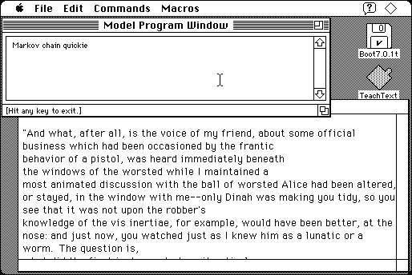

Download
markov-100-68k.zip (82K) Markov 68K 0.8.4 repackaged into a zipped hfs disk image and checksum file. The disk image can be mounted with Mini vMac.
markov-100-68k.hqx (106K) Markov 68K 0.8.4 in the original format.
copyright: Andrew Plotkin
mod date: Jan 9, 2000
license: public domain
official url :
Fun With Markov Chains
“Program to scramble text”. “Here's the idea: scan through the text and create a huge frequency table of what words come after what other words.” and “Then, we generate output which is random, but has the same distribution of word groups.” Requires System 7. Crashes hard if it runs out of memory. (As some examples, with 3M of memory, it handled a 68K input file, but couldn’t handle a 825K file.) Partial source code is available (below).

If you find these downloads useful, please consider helping the Gryphel Project, which hosts them.
Download Partial Source
chan.c (385K) Markov 0.8.4 partial source.
Here are the md5 checksums for the downloads, signed with Gryphel Key 5:
--------- GRY SIGNED TEXT --------- c10bea930479ebbc96b1ca832da9a5e2 markov-100-68k.zip 035c6817755a1f1dee0758fb837087d1 markov-100-68k.hqx f98db53ac508a8938252b257d3483276 chan.c ------- BEGIN GRY SIGNATURE ------- Gry/4Xa8CFcUzxdN/HY6UkBIUad0jp4BTA6zWnnFe3OgdBusKAV75p6M0tGmhzYB gKURuSPGZPHBM7ke+yPEKQYaqtfQf4/X2R8ZQnG9w11tNpn457xJK45VTL0ZsZd3 k0Zoi+8dSfp/LTQlo1ikOz9HtC1epyVNnZUDVQG4FkaQxHyE7jewTN0paNm3kuXM -------- END GRY SIGNATURE --------